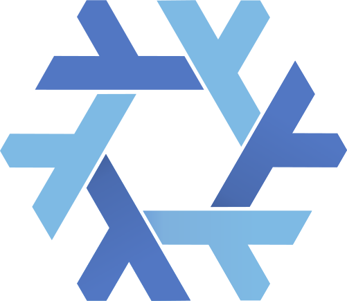
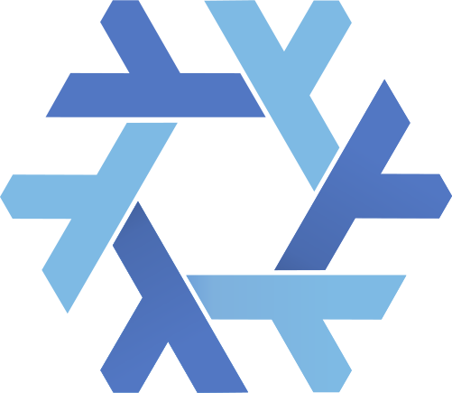

whoami
Developer passionate about new technologies. I value reliable software, so I tend to gravitate towards type safe languages/tech stacks, reproducible environments (nix) and test critical parts of my software.

Technologies I Use
 
Projects
project selection and detailsContact
email?